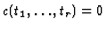
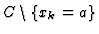
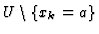
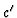
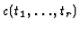
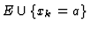

Suppose that

is an equation showing inconsistency among inequalities. Assignment of a concrete value to a design variable is expressed as a univariate linear equation. That is, univariate linear equation ``xk=a'' means ``a is assigned to xk''. Thus, by searching for univariate linear equations used for computing , design variables whose values should be changed can be found out. If ``xk=a'' is used to obtain , ``xk=a'' has something to do with the inconsistency. Otherwise, ``xk=a'' has nothing to do with it.Let C be the whole constraint set including univariate linear equations. Obviously, belongs to the ideal defined by C. If does not belong to the ideal defined by

, it is concluded that xk=a is used to compute . Otherwise, xk=a is not necessary to obtain . Therefore, design variables whose values should be changed are found out according to the following procedures.

.
be a normal form of
by G. If is not 0, let E be
.